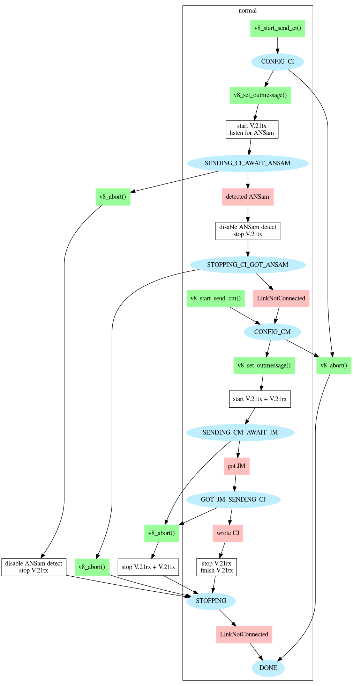
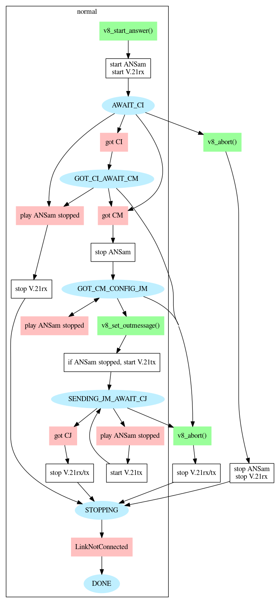

The V.8 library contains source code to implement the ITU V.8 standard.
To use the V.8 library you must #include "v8lib/v8.h".
The structure struct v8 is used to hold all of the state
required by the protocol. All fields of this structure are maintained
automatically by the V.8 library. To start running the V.8 protocol,
call one of these functions, passing in a pointer to an uninitialised
struct v8 and a Prosody channel:
v8_start_answer() - to answer a call
v8_start_send_ci() - to initiate a call with CI
v8_start_send_cm() - to initiate a call without CI after ANSam detection
The Prosody channel must be a full-duplex channel which has no operations in progress.
All library functions return standard Prosody error codes. After
calling any library function which returned zero (success), check the
status field in the struct v8. These values require you to
take action:
v8_set_outmessage() to configure the CI message desired
v8_set_outmessage() to configure the CM message desired
v8_fetch_inmessage() to retrieve the CM message received
and then call v8_set_outmessage() to configure the JM message desired
v8_fetch_inmessage() to retrieve the JM message received
rxfsk_metric in struct v8 can be passed
on to a subsequent modem. The field flags_detected
in struct v8 can be used if subsequent code needs
to know if V.8 failed due to an HDLC frame being detected.
Other values indicate that the next action to occur will be within the V.8 protocol itself.
When started with v8_start_answer(), the ANSam sent does not
have phase reversals. Calling v8_do_ansam_phase_reversals()
after v8_start_answer() will make the ANSam have phase
reversals.
To stop performing the V.8 protocol, call v8_abort().
The protocol does not necessarily end instantly - its end is still
indicated by the status changing to V8STS_DONE.
In addition to actions specified above that you must perform, there are actions that must be performed based on events:
struct v8 field await_read_event
is non-zero and the channel's read event is signalled, call
v8_handle_read()
struct v8 field await_write_event
is non-zero and the channel's write event is signalled, call
v8_handle_write()
struct v8 field await_recognition_event
is non-zero and the channel's recognition event is signalled, call
v8_handle_recognition()
To assist in manipulating the messages, there are two functions supplied with the library and intended to be modified as necessary:
v8_build_code()
v8_check_code()
The functions, as written, use const integers to determine which capabilities to use. If a capability varies at runtime, for example because it depends on what is specified in a configuration file or on resource availability, then the code should be modified so that the functions take a parameter which indicates when the capability is available.
The v8_check_code() function should also be modified to indicate
which capabilities have been agreed, so that the appropriate action
can be taken after completing the V.8 protocol.
The V.8 protocol is used by other standards. Sometimes the text of these standards seems to conflict with the text of the V.8 standard. Here is a list of various issues and how they are handled in the library.
V.8 (8.2.2) states that ANSam shall be transmitted for 5 +/- 1 seconds (i.e. 4 to 6 seconds). T.30 (6.1.1) states that the ANSam timeout is 2.6 to 4.0 seconds. The library uses the only value common to these ranges: four seconds.
The state machine works as follows:
| Waiting for | ||||||
|---|---|---|---|---|---|---|
| State | Read | Tone generation | Write | Detect | User | Notes |
| V8STS_CONFIG_CI | - | - | - | - | CI | Start of calling, if listening for ANSam |
| V8STS_SENDING_CI_AWAIT_ANSAM | - | (silence) | (CI) | ANSam | - | V.21 tx and tone generation alternate |
| V8STS_STOPPING_CI_GOT_ANSAM | - | - | - | - | - | |
| V8STS_CONFIG_CM | - | - | - | - | CM | Start of calling, if ANSam already heard |
| V8STS_SENDING_CM_AWAIT_JM | Yes | - | CM | - | - | |
| V8STS_GOT_JM_SENDING_CJ | - | - | CJ | - | - | |
| V8STS_AWAIT_CI | Yes | ANSam | - | - | - | Start of answering |
| V8STS_GOT_CI_AWAIT_CM | Yes | ANSam | - | - | - | |
| V8STS_GOT_CM_CONFIG_JM | Yes | - | - | - | JM | |
| V8STS_SENDING_JM_AWAIT_CJ | Yes | - | JM | - | - | |
| V8STS_STOPPING | ? | ? | ? | - | - | Waiting for all parts to finish |
| V8STS_DONE | - | - | - | - | - | |
The calling state machine looks like this:

while the answering state machine looks like this:

If TiNGtrace is enabled, the V.8 library functions will normally
output trace through the TiNG library trace mechanism. It is possible to use an alternative application
specific mechanism by assigning the address of a trace function to v8_showtrace in the
same way as this is done for TiNG_showtrace for TiNG library. This may be necessary if an
application is built with a different compiler version to that used to build TiNG library where
the two compilers have different layouts for a va_list structure.
The V.8 library is distributed with Prosody.